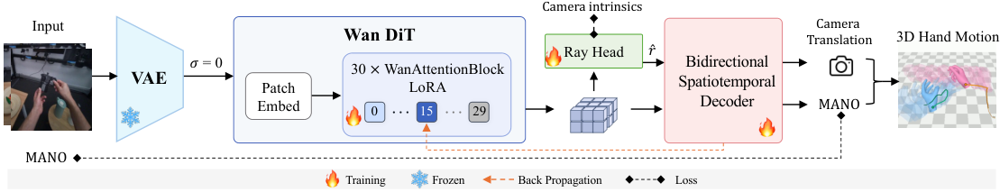
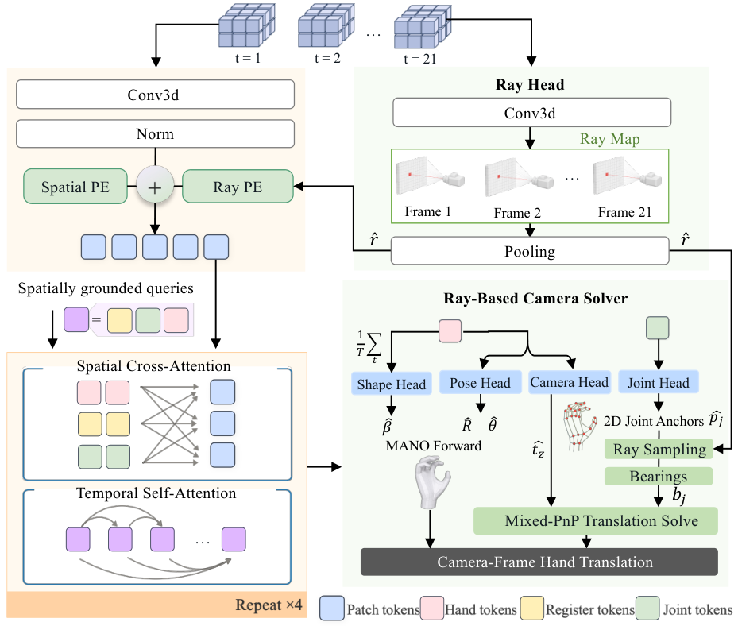
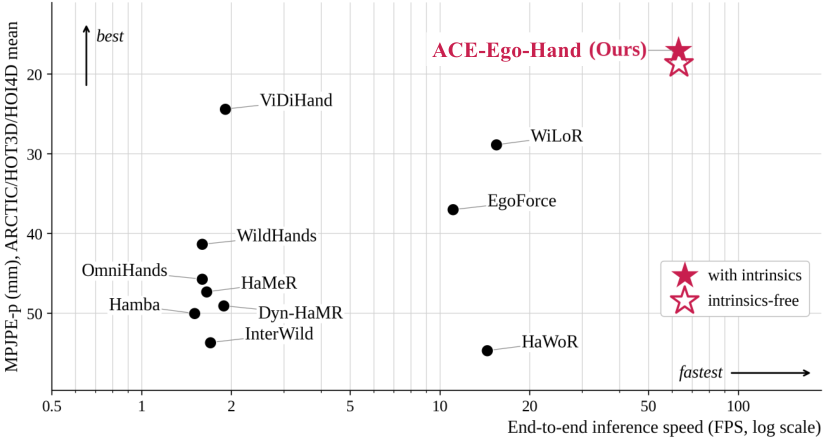
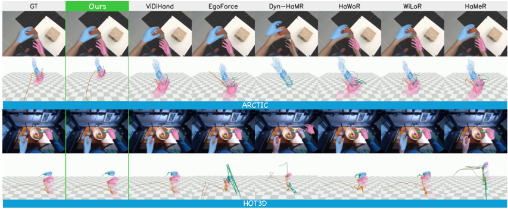
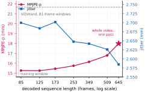
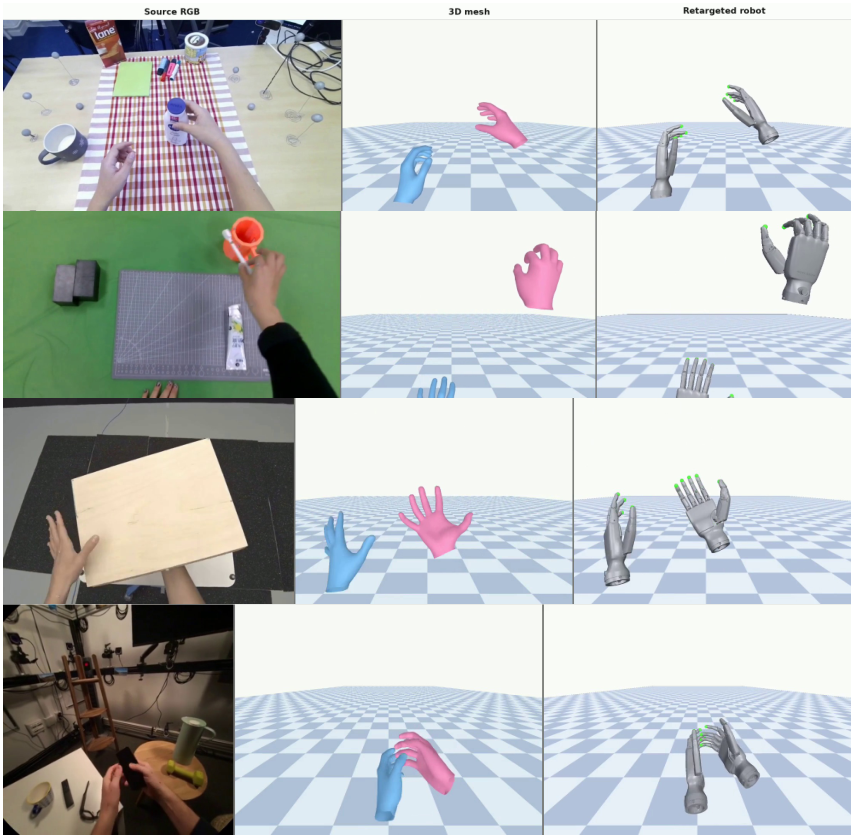
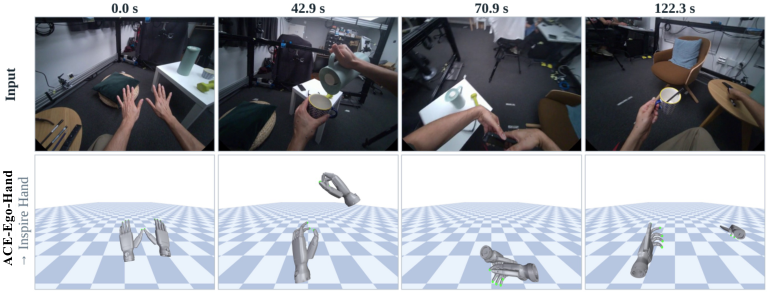
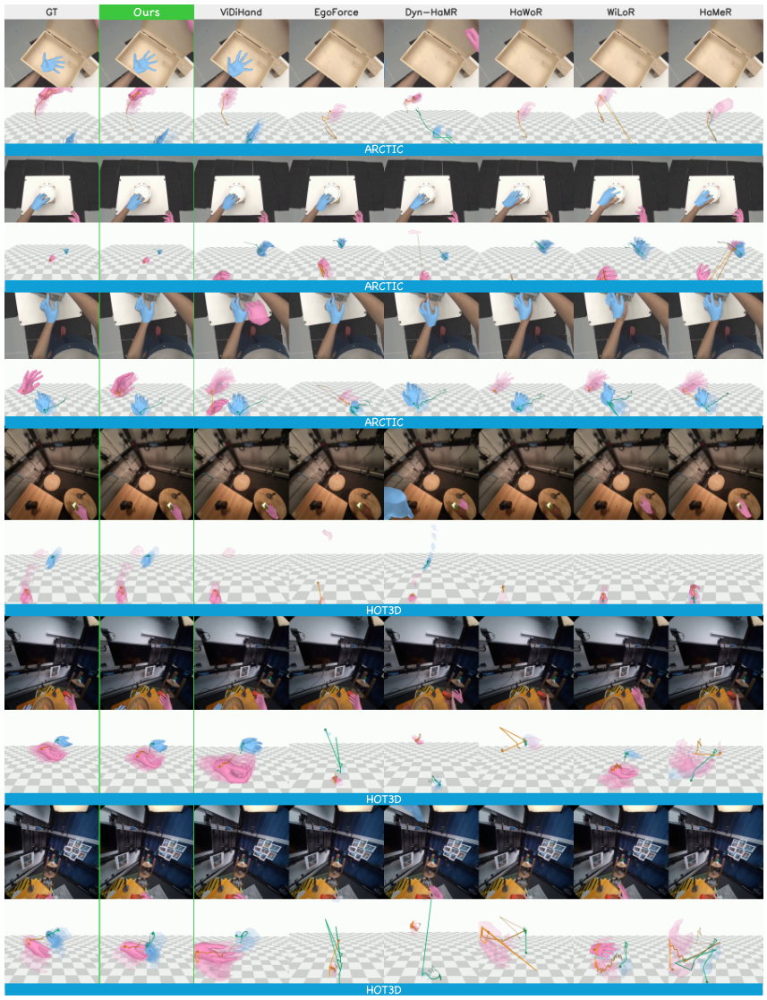
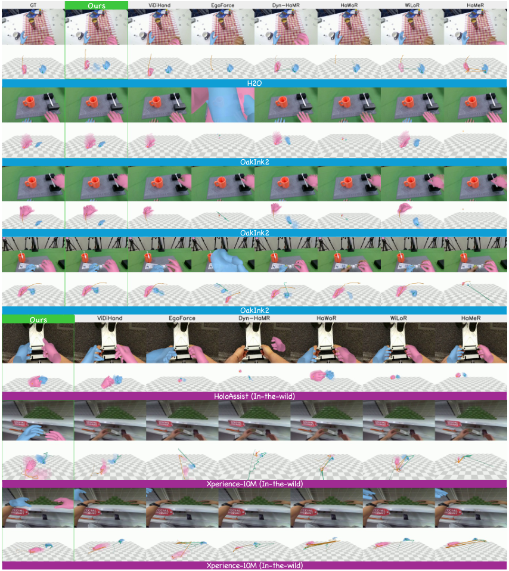
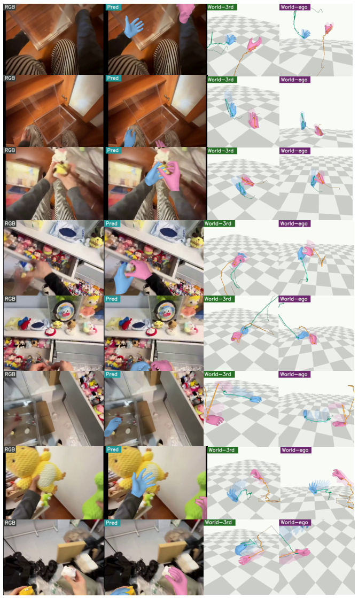

一句话概括:第一人称(egocentric)视频里恢复带度量尺度的双手 3D 轨迹,最大难点是手-物遮挡与手出画(out-of-sight, OOS)。此前路线要么逐帧「检测-裁剪-回归」、手一出画就丢,要么像 ViDiHand 那样把视频扩散模型(VDM)当像素渲染器多步采样再回归姿态,又慢又把生成伪影带进几何。ACE-Ego-Hand 的做法是把预训练 VDM(Wan2.2-Fun-5B-Control)改造成确定性几何编码器:对干净 latent 做单次 σ=0 前向,在 block-15 处取特征,接 LoRA 端到端微调;再用一个双向时空解码器整段恢复双手 MANO 轨迹,并用射线场相机求解器把度量放置与相机内参解耦(K-free 配置测试时完全不需要内参)。
ggxxii.github.io/ace-ego-hand/assets/ACE-Ego-Hand_demo.mp4,2026-09-30 下载存档)。要点:手暂时离开视野(黄色帧)时,ACE-Ego-Hand 仍保持手的身份与轨迹连续;右侧雷达图显示其在 7 项指标中的 6 项领先(F1、MPJPE-p、PA-p、EPE2D-p、GO-p、CT-p、Jitter,均为 ARCTIC/HOT3D/HOI4D 均值)。ggxxii/dreamhand 迁移到 ggxxii/ACE-Ego-Hand(旧地址 302 跳转)。库内《视频生成驱动动态人体重建调研》以 DreamHand 名字收录(route E「确定性几何/运动编码器」),指的是同一篇。本笔记按 v3 标题为准。acerobotics2025/ACE-Ego-Hand(K-given / K-free 两个 checkpoint)。训练代码、数据预处理、评测代码均未发布,因此本文所有训练侧超参与损失权重只能引论文附录,无法源码复核(见 §9 的可信度说明)。
代表:InterWild、HaMeR、Hamba、WiLoR、WildHands、EgoForce(表 1 的六个单帧基线)。
失败模式:尺度与深度绑定在检测框上,手被严重遮挡或出画时根本不产生输出——不是误差变大,而是轨迹断裂。附录 C.2 的数据显示,这类方法在出画手帧上集体塌进 126–164mm 的窄带,且排名与可见帧排名完全无关,等于「没有在做人」。
代表:HaWoR(DROID-SLAM + 补全)。
失败模式:误差随时间累积;81 帧(2.7s)短片段上 DROID-SLAM 不稳定。论文评测时被逼把 HaWoR 的 SLAM 与补全两级都关掉、只评其相机空间前端(附录 A.3 明确声明这是对 HaWoR 不利的设定)——即便如此它的 MPJPE-p 仍是 ARCTIC 最差的 45.4mm。
代表:OmniHands(9 帧融合)、Dyn-HaMR、GENMO、EgoH4;以及最直接的对手 ViDiHand(VACE 微调 Wan 生成几何叠加图,再从去噪特征回归 MANO,12–25 步采样)。
失败模式:窗口化模型手出画即失去历史上下文,重回画面后无法连贯续接;ViDiHand 式「渲染再回归」路线要付出完整采样轨迹的延迟(1.91 fps),且骨干网络吃不到重建目标的梯度(解码器在冻结缓存特征上训练),生成伪影会直接传播成几何误差。
geodit_arch.py:70-87 对鱼眼内参抛 NotImplementedError)。输入:一段第一人称 RGB 视频片段 $V=\{I_t\}_{t=1}^{T}$(基准协议 $T=81$ 帧;RoPE 使单次前向可外推到整段录像,附录 D.2 实测 594–1087 帧)。标准配置额外需要相机内参 $K$(仅用于平移求解的方位角);K-free 配置测试时不需要任何相机信息。输出:逐帧双手 MANO 参数——全局朝向 $\hat{R}_t$、姿态 $\hat{\theta}_t$、相机系平移 $\hat{\tau}_t$,以及每片段每手一个的形状 $\hat{\beta}$;MANO 层 $\mathcal{M}$ 把参数映射成网格与 21 个关节;另输出逐帧存在性(existence)与可见性(visibility)分数。
| 符号 | 含义 | 形状 / 取值 |
|---|---|---|
| $V,\ I_t$ | 输入视频片段与其第 $t$ 帧 | $T=81$ 帧(训练窗口),$672{\times}480$(ARCTIC)/ $480{\times}480$(HOT3D) |
| $z=\mathcal{E}(V)$ | 冻结 Wan2.2 VAE 编码的干净视频 latent | 48 通道;$T{=}81 \to T'{=}21$ latent 帧(4× 时间、16× 空间压缩) |
| $\Phi,\ L^{\star}$ | Wan2.2-Fun-5B-Control 的 DiT(30 块)与特征 tap 位置 | $L^{\star}=15$(零基,即跑前 16 块),宽度 $D=3072$ |
| $F=\{F_\ell\}$ | tap 出的时空特征网格 | $[T'{=}21,\ 42{\times}30,\ 3072]$(672×480 输入时,16×16 像素/格) |
| $\hat{r}(u)$ | Ray Head 预测的单位视线方向场 | 每格 $(\hat r_x,\hat r_y,\hat r_z)$,沿时间池化为单场 |
| $X_\ell$ | 解码器第 $\ell$ 帧的 patch token | $W_F$ 投影到 384 维 + 空间 PE + 射线 PE |
| $\hat{p}_j,\ A_j$ | 关节 $j$ 的 2D 锚点与其 cross-attention 热力图 | $\hat p_j\in[0,1]^2$,soft-argmax 亚格子精度 |
| $\hat{R}_t,\hat{\theta}_t,\hat{\beta}$ | MANO 全局朝向 / 姿态 / 形状 | 6D 旋转(Gram–Schmidt 正交化);$\hat\beta$ 每片段每手一个 |
| $\hat{\zeta},\ \hat{t}_z$ | Camera Head 的 log-depth 与光轴深度 | $\hat t_z=\exp(\hat\zeta)>0$ |
| $b_j=(b^x_j,b^y_j)$ | 关节 $j$ 的方位角(无量纲 $x/z,\ y/z$) | K-free:从 $\hat r$ 拟合的等效针孔算;标准:由 $K$ 算 |
| $\hat{\tau}=(\hat t_x,\hat t_y,\hat t_z)$ | 相机系平移(m) | $\hat t_x,\hat t_y$ 由 mixed-PnP 闭式解出 |

ace_ego_hand_k.pt / ace_ego_hand_kfree.pt 两个权重与两个 yml(源码 diff 证实配置只差 self_ray_decode 一项,见 §9)。
| 阶段 | 输入 | 算子 | 输出 |
|---|---|---|---|
| VAE 编码(冻结) | $V$: $[B,3,81,480,672]$ | Wan2.2 因果 VAE $\mathcal{E}$(4× 时间、16× 空间) | $z$: $[B,48,21,30,42]$ |
| DiT 前 16 块 | $x{=}z$(48ch)+ 全零控制通道(100ch),$t{=}0$ | patch embedding(可训)+ block 0..15(self/cross-attn + FFN,LoRA 注入) | $F$: token 序列 $[B,\ 21{\cdot}42{\cdot}30,\ 3072]$ |
| 跳过部分 | block 16..29 与扩散输出头不执行,单次前向算力约省一半(论文 §3.1);附录 B.1 确认这些块的 LoRA B 矩阵训练后仍逐比特为零 | ||
骨干 $\Phi$ 是以 rectified flow 在加噪 latent $x_\sigma=(1-\sigma)z+\sigma\epsilon$ 上预训练的 DiT。本文把它严格当编码器用:冻结 VAE 编码器压出干净 latent $z=\mathcal{E}(V)$,在零噪声水平做单次确定性前向,并截断到第 $L^{\star}=15$ 块:
得到 $T'=21$ 个 latent 帧(对应 $T=81$ RGB 帧)的特征序列 $F=\{F_\ell\}_{\ell=1}^{T'}$,每帧是 $D=3072$ 通道的空间网格(672×480 输入时为 $42\times30$,即 16×16 像素/格)。
geodit_arch.py:298-314 证实:feature_mode=noised_video + nv_sigma=0.0 时 $x=(1-0)z+0\cdot\epsilon=z$,$t=0\cdot1000=0$)。wan_backbone.py:134-136),但梯度只流经前 16 块。该模块无独立损失,但通过 LoRA / patch embedding 接收全部下游损失($\mathcal{L}_{\mathrm{rot}}$、$\mathcal{L}_{\mathrm{joint}}$、$\mathcal{L}_{\mathrm{img}}$、$\mathcal{L}_{\mathrm{cam}}$、$\mathcal{L}_{\mathrm{tmp}}$、$\mathcal{L}_{\mathrm{ray}}$)的反传梯度——这正是与 ViDiHand「冻结缓存特征」路线的本质区别(论文 §2 明确指出后者骨干吃不到重建梯度)。
scripts/precompute_caption.py:26-27);② 100 通道控制分支在推理时全零,视频只走「噪声输入」槽。| 组件 | 输入 | 算子 | 输出 |
|---|---|---|---|
| token 化 | $F_\ell$: $[42{\times}30,\ 3072]$ | $W_F$ 线性投影 3072→384 + LayerNorm;加空间 PE(可学习 16×16 网格双线性 resize)与射线 PE | $X_\ell$: $[1260,\ 384]$ |
| 查询集合 | 每 latent 帧 48 个 query:2 手 token(固定左/右槽位)+ 42 关节 token(2×21)+ 4 register token(可学习,源码 memory_encoder.py:399 证实计数);register 作「草稿纸」不更新 $F$ | ||
| 交替注意力 ×4 层 | query + $X_\ell$(read-only memory) | 每层 = 帧内空间 Cross-Attention → 全片段时间 Self-Attention(8 头,FFN×4,RoPE) | 精化后的 48 query/帧 |
| 关节读出(Joint Head) | 精化关节 token 对 $X_\ell$ 做最终 cross-attn | 注意力权重即热力图 $A_j$ → soft-argmax 得 2D 锚点 $\hat p_j$; attended feature → MLP 回归腕相对 3D | $\hat p_j\in[0,1]^2$,$\bar J_j\in\mathbb{R}^3$(m) |
| Pose Head | 手 token | MLP → 6D 旋转(Gram–Schmidt 正交化) | $\hat R$(global orient)、$\hat\theta$(15 关节姿态) |
| Camera Head | 手 token | MLP → log-depth $\hat\zeta$ | $\hat t_z=\exp(\hat\zeta)$ |
| Shape Head | 手 token 沿时间池化 | MLP(片段级,每手一次) | $\hat\beta\in\mathbb{R}^{10}$ |
| 存在性/可见性头 | 手 token | MLP → sigmoid 分数(阈值 0.5) | exists / visibility |
| 时间分辨率恢复 | 时间注意力在 latent 帧率 $T'{=}21$ 上跑,输出线性插值回 $T{=}81$ 帧;关节坐标直接按坐标插值,手特征按特征插值后逐帧读头(附录 A.1「Reading Jitter」+ 源码 memory_projector.py:1138-1159);整段注意力成本约为全帧率的 $(T'/T)^2\approx1/15$ | ||
每个 latent 帧的 patch token 由两项加性位置编码构成:
$W_F$ 把 3072 通道投影到 384 维解码器空间;$P^{\mathrm{sp}}$ 是可学习 16×16 网格双线性重采样到 token 分辨率的空间 PE;$\Gamma$ 对 Ray Head 预测的视线方向做 8 倍频傅里叶编码(方位角/仰角的 sin/cos,源码 memory_projector.py:99-148),零初始化 MLP $g$ 映射到解码器维度——把「每个像素朝哪看」的几何先验直接注入 token。
关节 $j$ 的 2D 锚点由其 query 的 cross-attention 权重做 soft-argmax:
$u$ 遍历 $[0,1]^2$ 归一化格子中心。该形式可导、亚格子精度,且 anchor 不依赖检测框(直接省掉匈牙利匹配)。源码 memory_encoder.py:562-565, 629-638 逐行对应。
memory_encoder.py:57-68)消除绝对长度约束——同一份权重可以单次前向解码任意长度(附录 D.2 实测整段 594–1087 帧直出)。换成绝对 PE,MPJPE-p +2.523mm、Jitter 2.704→2.948。betas_scope=per_hand, per_hand_betas_source=slot_mean(memory_projector.py:897-898,对手槽时间均值过 head_betas_hand)。
该模块是损失的主要落点:$\mathcal{L}_{\mathrm{rot}}$(朝向/姿态/形状)、$\mathcal{L}_{\mathrm{joint}}$(腕相对/相机系/腕部 3D)、$\mathcal{L}_{\mathrm{img}}$(2D 锚点 + 重投影)、$\mathcal{L}_{\mathrm{cam}}$(经 PnP 求解器反传)、$\mathcal{L}_{\mathrm{pres}}$(存在性/可见性 BCE)、$\mathcal{L}_{\mathrm{tmp}}$(3D 加速度平滑)。权重见 §7 总表。
直接在相机系回归 3D 平移会把手部关节运动与头部 ego-motion 耦合在一起,并且让读出头去「背」某台相机的像素-度量映射——换内参就失效(论文 §3.3:"Readout heads that memorize the pixel-to-metric mapping of one camera fail to generalize across intrinsics")。ACE-Ego-Hand 的方案是把相机几何显式参数化为连续视线场(ray field),平移只剩一个可闭式求解的小问题。
| 属性 | 值 | 出处 |
|---|---|---|
| 结构 | 对 $F$ 的零初始化 1×1 卷积,输出每格 3 维方向,归一化为单位射线 $\hat r$ | 论文 §3.3;源码 geodit_arch.py:233-238(nn.Conv3d(base_lc, 3, kernel_size=1),weight/bias 置零) |
| 时间处理 | 沿时间池化为单场(片段内内参恒定) | 论文 §3.3;源码 geodit_arch.py:425(raymap[layer].mean(dim=2)) |
| 参数量 | 9,219(3072×3 + 3) | 论文附录 B.1 |
| 监督 | 余弦距离 $\mathcal{L}_{\mathrm{ray}}$(式 4),GT 内参反投影的单位射线作目标 | 论文 §3.3 |
一个头同时兼容针孔与鱼眼相机模型(训练混合里 Re:InterHand 是鱼眼渲染),测试时不需要内参输入。但发布版 checkpoint 只在针孔数据上训练,鱼眼输入被代码直接拒绝(见 §9)。
思路:不回归完整 3D 平移。Camera Head 只回归光轴深度 $\hat t_z=\exp(\hat\zeta)$(指数保证正定度量深度);平面内平移 $(t_x,t_y)$ 用模型自己的 2D 关节锚点闭式解出。逐帧逐手:MANO 前向得「未放置」关节 $J^{\mathrm{can}}=\mathcal{M}(\hat R,\hat\theta,\hat\beta)$,关节 $j$ 深度 $z_j=J^{\mathrm{can}}_{z,j}+\hat t_z$;方位角 $b_j$ 两个来源(K-free:对 $\hat r$ 拟合等效针孔 $(\hat f,\hat c)$,$b_j=(\hat p_j-\hat c)/\hat f$;标准:$((u_j-c_x)/f_x,(v_j-c_y)/f_y)$)。透视投影对平面位移是线性的,故 $t_x$ 有加权最小二乘闭式解:
$t_y$ 对称。$m_j\in\{0,1\}$ 是投票门:关节在相机前 ≥5cm 且锚点在画面内留 ≥2% 边距。有效关节 <6 个、或重投影 RMS 残差 > max(15px, 手部 2D 框对角线 × 0.25) 时,整只手回退到「腕部射线在深度 $\hat t_z$ 上的反投影」。这些常数在源码里逐字对应:memory_projector.py:1252-1257(_PNP_Z_NEAR=0.05、_PNP_INTERIOR_MARGIN=0.02、_PNP_MIN_INTERIOR=6、_PNP_RESID_MIN_PX=15.0、_PNP_RESID_FRAC=0.25)。
K-free 配置额外学一个「从射线场拟合等效针孔相机」的闭式逐轴线性回归(有方差下限 $10^{-4}$ 与焦距区间保护;失败的片段——包括鱼眼 Re:InterHand 训练臂——回退到直接读射线场),并用 $\mathcal{L}_{\mathrm{fit}}$(拟合相机方位角对 GT 的误差,权重 5,前 500 步线性 warmup)监督。拟合相机的价值:能外推出画锚点并给逐 token 射线场去噪。附录 D.1 量化:不加拟合时,画面最外圈(r>0.75)平移误差从 0.048 涨到 0.165m(ARCTIC,3.4×)/ 0.035→0.190m(HOT3D,5.4×),而腕对齐姿态几乎不变——边缘失败是纯度量放置问题;加上拟合后 OOS 平移误差 ARCTIC 0.55→0.10m、HOT3D 0.52→0.11m、OakInk2 0.45→0.06m,HOT3D 假阴从 2,491 降到 74。
memory_projector.py:1341-1355),腕部回退同理(memory_projector.py:1173-1185);而等效针孔拟合 _fit_pred_K(inference.py:24-45)的结果只被写进输出的 pred_intrinsics 元数据,没有参与解码。也就是说,发布代码的 K-free 解码路径对应论文附录 D.1 里「w/o camera fit」的变体,表 1 的 K-free 数字是否由带拟合的解码产生、拟合是否只在训练回路里起作用,在训练/评测代码发布前无法确认。实际部署 K-free 时,画面边缘的平移精度应预期接近附录 D.1 的下限而非表 1。
$\mathcal{L}_{\mathrm{ray}}$(权重 1)监督射线场;$\mathcal{L}_{\mathrm{fit}}$(权重 5,仅 K-free)监督拟合相机,其梯度只经 4 个拟合参数流回射线场;$\mathcal{L}_{\mathrm{cam}}$(权重 1)穿过 PnP 求解器监督平移。
可训练组件(patch embedding、LoRA、Ray Head、解码器)联合优化:$\mathcal{L}=\mathcal{L}_{\mathrm{rot}}+\mathcal{L}_{\mathrm{joint}}+\mathcal{L}_{\mathrm{img}}+\mathcal{L}_{\mathrm{cam}}+\mathcal{L}_{\mathrm{pres}}+\mathcal{L}_{\mathrm{tmp}}+\mathcal{L}_{\mathrm{ray}}$(论文 Eq.6),K-free 再加 $\mathcal{L}_{\mathrm{fit}}$。各项权重出自论文附录 B.3(训练代码未发布,权重无法源码复核):
| 损失项 | 公式 / 形式 | 权重 | 作用 |
|---|---|---|---|
| $\mathcal{L}_{\mathrm{rot}}$ | 朝向/姿态:geodesic $\arccos(\tfrac12(\mathrm{tr}(\hat R^\top R)-1))$ + 旋转矩阵 MSE;形状 $\ell_1$ | 1 / 1 / 0.1 | MANO 旋转与形状监督 |
| $\mathcal{L}_{\mathrm{joint}}$ | 腕相对(10)/ 相机系(5)/ 腕部(2)3D 关节 $\ell_1$ | 10 / 5 / 2 | 主导项,关节几何 |
| $\mathcal{L}_{\mathrm{img}}$ | 训练相机下 soft-argmax 2D 锚点 + 重投影 MANO 关节(腕部 0.5) | 1(腕 0.5) | 图像空间对齐 |
| $\mathcal{L}_{\mathrm{cam}}$ | 装配后平移 $\ell_1$,梯度穿过 mixed-PnP | 1 | 度量放置 |
| $\mathcal{L}_{\mathrm{pres}}$ | 存在性 / 可见性 BCE | 0.5 / 0.25 | 免检测器的开关 |
| $\mathcal{L}_{\mathrm{tmp}}$ | 3D 关节加速度 $\|\hat J_{t+1}-2\hat J_t+\hat J_{t-1}\|_1$ | 0.5 | 时序平滑(Jitter 2.4–3.2 的来源) |
| $\mathcal{L}_{\mathrm{ray}}$ | 射线场余弦距离(式 4) | 1 | 相机几何 |
| $\mathcal{L}_{\mathrm{fit}}$(仅 K-free) | 拟合相机方位角对 GT 的误差,前 500 步线性 warmup | 5 | 免内参解码;梯度只经 4 个拟合参数回射线场 |
self_ray_pe: true,即射线 PE 一律来自预测射线场。| 项 | 值 |
|---|---|
| 训练混合(7 源,按批采样权重) | ARCTIC 14 · HOT3D 18 · H2O 10 · OakInk2 14(以上第一人称视频+MANO)· Re:InterHand 16(鱼眼渲染视频)· FreiHAND 14 · RHD 14(静态图,复制成 5 帧静片段);HOI4D 完全留出作零样本测试 |
| 训练窗口 | 全长录像中每步随机取 21 latent 帧(81 RGB 帧)窗口;30fps 不抽帧 |
| 优化器 | AdamW,20k 步,weight decay $10^{-2}$,grad clip 1.0,cosine 衰减,200 步 warmup |
| 三组学习率 | 解码器+头 $2{\times}10^{-4}$;LoRA $1{\times}10^{-4}$;patch embedding $2{\times}10^{-5}$ |
| 批量与硬件 | 每 GPU 4 clips;标准配置 16×A100(等效 batch 64),K-free 8×A100(等效 batch 32) |
| 输入分辨率 | ARCTIC 672×480;HOT3D 480×480;H2O/OakInk2 宽 832 等比(内参同步缩放,保证 latent 网格为偶数) |
| 测试切分 | ARCTIC 按被试(s05)、H2O 按被试(subject 4)、HOT3D 按录像(126/72)、OakInk2 按片段(202 段公共子集);仅 ARCTIC/H2O 被试隔离(附录 F.1 自陈) |
infer_video.py)红色节点即 §6.4 指出的「宣称 vs 实现」出入点:论文说拟合相机参与解码,发布代码里拟合结果只落盘。两种模式对应论文的两组数字:tiled = 表 1 基准协议;full = 附录 D.2 长序列设定(MPJE-p 涨 18% 换 Jitter 降 4%)。
ggxxii/ACE-Ego-Hand(commit 9757868,2026-09-10)只发布推理代码,训练器、数据 pipeline、评测器均未发布;MANO 权重因许可证需自行转换(scripts/convert_mano_pkls.py)。本节区分两类信息:✅ = 发布源码逐行核实(附 file:line);📄 = 仅论文/附录自述,无法源码复核。仓库目录:ace_ego_hand/{archs,models}/*.py + infer_video.py + options/*.yml + scripts/*.py,共约 3,100 行 Python。
options/ace_ego_hand_kfree.yml 逐行)| 配置键 | 值 | 与论文对照 |
|---|---|---|
backbone.tap_layers | [15] | ✅ block-15(跑前 16/30 块) |
backbone.feature_mode / nv_sigma | noised_video / 0.0 | ✅ σ=0 干净 latent;$x=z$、控制槽全零、$t=0$(geodit_arch.py:298-314) |
backbone.mh_expand | false | ✅ 不用多头几何渲染手术(那是 ViDiHand 血统的遗产,noised_video 强制要求关闭,geodit_arch.py:139-140) |
lora | rank 64 / α 64 / dropout 0 | ✅ 附录 B.1;注入每块 10 个线性层(wan_backbone.py:134-136:self/cross-attn 的 qkvo + ffn.0/ffn.2) |
raymap / self_ray_pe / self_ray_decode | true / true / true(标准配置仅最后一项 false) | ✅ 两配置唯一 diff;射线 PE 都来自预测场 |
projector.hidden_dim / num_heads / ffn_mult / alt_num_layers | 384 / 8 / 4 / 4 | ✅ 384 维解码器、4 层交替 |
alt_query_mode / alt_num_register / alt_temporal_rope | joint / 4 / true | ✅ 关节 query、4 register、RoPE |
cam_trans_decode | mixed_pnp | ✅ §3.3 |
betas_scope / per_hand_betas_source | per_hand / slot_mean | ✅ 片段级形状,手槽时间均值(memory_projector.py:897-898) |
joints2d_readout | pooled | ⚠️ 名义为 pooled,但交替编码器的关节读出(alt_j2d)在 memory_projector.py:836-842 覆盖 pooled 结果——实际生效的就是论文的 soft-argmax 读出;该键是历史遗留 |
| 分组 | 参数量 | 说明 |
|---|---|---|
| 冻结预训练权重 | 5.002 B | Wan2.2-Fun-5B-Control low-noise DiT:30 块、宽 3072、FFN 14336、输入 148ch(48 noisy + 100 control)、输出 48ch;全程冻结 |
| LoRA 适配器 | 161.219 M(5.37 M/块 × 30) | rank=α=64;但梯度实际只到达前 16 块内的 85.983 M——附录 B.1 确认 20k 步后 tap 之后的 LoRA B 矩阵「逐比特为零」,即恒等映射 |
| patch embedding | 1.822 M | 全量微调 |
| 解码器+读出头 | 20.347 M(实际路由 12.287 M) | 384 维、4 层交替、各读出 MLP |
| Ray Head | 9,219 | 1×1 Conv 3072→3,零初始化(✅ geodit_arch.py:233-238) |
| 优化器总注册 / 梯度可达 | 183.99 M / 100.10 M | 对照:ViDiHand 生成路线骨干无梯度(0) |
memory_projector.py:580-581);腕部头 bias $[0,0,0.5]$(:590-591);存在性头 bias $-1$(初始 sigmoid≈0.27,偏「不存在」,保守起步,:586-589)。memory_projector.py:111-117);Ray Head 同理(零初始化 1×1 Conv)。infer_video.py:147-156)。scripts/precompute_caption.py:26-27)——渲染生成血统(ViDiHand/GeoDiT 谱系)的遗留,论文通篇未提文本条件。这意味着编码器实际读的是「视频 latent + 一句几何渲染提示」的组合,换一个 caption 的影响从未被消融过。| 项 | 值 | 出处 |
|---|---|---|
| 吞吐 | 63.1 fps(标准)/ 63.3 fps(K-free),单卡 A100,81 帧段端到端,72% 耗时在 VAE 编码 | 📄 附录 C.4(协议:同机同段、≥3 次取中位、不计加载与渲染) |
| 对照 | ViDiHand 1.91 fps(精度配置)→ 33×;crop 系五基线共享 ViTDet-H+ViTPose 前端,聚在 1.5–1.7 fps | 📄 附录 C.4 |
| 长序列 | --mode full 单次前向整段(21→任意 latent 帧,RoPE 外推);tiled 用 22-latent 窗口对齐 81 帧段(✅ inference.py:62-107) | ✅ + 📄 附录 D.2 |
| 显存 | 论文/README 均未给。5B bf16 权重 ≈10GB + VAE + 解码器,⚠️【推测】单卡 24GB(3090)做推理应可行;训练(16×A100)非单卡可复现 | — |
| 依赖钉版 | Python 3.10 / CUDA 12.1 / torch 2.5.1 / diffusers 0.36.0 / transformers 4.57.3 / peft 0.18.1 / smplx 0.1.28;骨干经 VideoX-Fun(clone 到 third_party/)加载 | ✅ requirements.txt |
| 相机限制 | 仅针孔:鱼眼内参抛 NotImplementedError(✅ geodit_arch.py:70-87,注释解释:MEI 广角下针孔反投影会把水平方位角压约 7×,「看起来合理但全错」比报错更危险);鱼眼素材需先去畸变 | ✅ |
| 已知坑 | MANO 官方 pkl 依赖 chumpy,新版 numpy 无法 import——必须跑 convert_mano_pkls.py 转纯 numpy(✅ README + requirements 注释); intrinsics 按「标定分辨率」解释、随视频分辨率自动缩放(infer_video.py:124-137) | ✅ |
| 论文宣称 | 源码复核结果 | 结论 |
|---|---|---|
| σ=0 单次确定性前向 | feature_mode=noised_video, nv_sigma=0.0 → $x=z$、$t=0$、无采样循环(geodit_arch.py:298-314) | ✅ 一致 |
| block-15 tap(前 16 块) | tap_layers: [15];forward_features 在 block i 输出处取 tap,默认 run_head=False 时第 15 块后直接返回(wan_backbone.py:245-260) | ✅ 一致 |
| 48 queries(2 手+42 关节+4 register) | n_hand=2, n_joint=42, num_register=4, n_camera=0(memory_encoder.py:387-400) | ✅ 一致 |
| soft-argmax 2D 锚点(式 3) | memory_encoder.py:562-565 取 attn 权重,_soft_argmax(:629-638)按网格坐标加权 | ✅ 一致 |
| PnP 门限(5cm / 2% / 6 关节 / max(15px, 0.25·diag)) | memory_projector.py:1252-1257 常数逐字相同 | ✅ 一致 |
| K-free 用「拟合的等效针孔」提供解码方位角 | 解码直接 grid_sample 原始射线场(memory_projector.py:1341-1355);_fit_pred_K 只写 pred_intrinsics 元数据(inference.py:24-45, 65) | ⚠️【待核实】不一致,见 §6.4 |
| 训练:20k 步、3 组 LR、损失权重、数据混合 | 训练代码未发布 | 📄 无法复核 |
geodit_arch.py 里仍保留 D-mode 流匹配训练、生成渲染头、oracle 几何注入探针等完整实验脚手架;注释记录了「单手 PnP 拟合焦距在同一片段上散布 28°–108° HFOV」这类实测结论(inference.py:71-76),说明作者确实试过「从手拟合相机」并因不稳定放弃,改投「从全图射线场拟合」。这类失败实验记录比论文正文更能说明设计动机。
指标:MPJPE-p / PA-p(mm,腕对齐 / Procrustes 对齐,带漏检惩罚),MPJPE+OOS(mm,含出画手的全体平均),EPE2D-p(px),GO-p(°),CT-p(m),Jitter(mm/frame²)。粗体=该列最优;绿行=本文。基线行引用 ViDiHand 已发布评测(同协议),EgoForce 与本文行由作者复跑;⚠️ 注意 H2O/HOI4D 含伪 GT(§2.3),头条结论以 ARCTIC/HOT3D 为准。
| 方法 | F1↑ | MPJPE-p↓ | PA-p↓ | MPJPE+OOS↓ | EPE2D-p↓ | GO-p↓ | CT-p↓ | Jitter↓ |
|---|---|---|---|---|---|---|---|---|
| ARCTIC(重度双手遮挡) | ||||||||
| HaMeR(单帧) | 0.957 | 29.197 | 14.596 | 38.183 | 65.289 | 24.907 | 0.095 | 18.279 |
| WiLoR(单帧) | 0.974 | 22.012 | 11.873 | 31.502 | 71.527 | 17.358 | 0.075 | 24.091 |
| WildHands(单帧) | 0.960 | 25.704 | 13.941 | 33.915 | 50.517 | 22.320 | 0.058 | 12.972 |
| EgoForce‡(单帧+卡尔曼) | 0.963 | 22.388 | 14.322 | 32.193 | 61.761 | 21.073 | 0.069 | 24.158 |
| OmniHands(9 帧融合) | 0.954 | 29.674 | 14.203 | 38.191 | 51.505 | 24.580 | 0.087 | 45.312 |
| HaWoR(相机系前端) | 0.895 | 45.357 | 26.375 | 53.443 | 158.062 | 43.325 | 0.149 | 19.789 |
| ViDiHand(VDM 生成路线) | 0.999 | 21.668 | 9.821 | 31.045 | 12.407 | 14.642 | 0.047 | 3.183 |
| ACE-Ego-Hand | 1.000 | 15.256 | 7.474 | 16.783 | 9.180 | 11.807 | 0.021 | 2.700 |
| ACE-Ego-Hand(K-free) | 1.000 | 16.615 | 8.756 | 18.061 | 11.014 | 12.208 | 0.028 | 2.770 |
| HOT3D(广角复杂视角) | ||||||||
| WiLoR | 0.937 | 30.966 | 19.980 | 52.014 | 72.978 | 25.746 | 0.098 | 17.976 |
| ViDiHand | 0.983 | 21.514 | 11.383 | 44.440 | 14.953 | 15.829 | 0.040 | 3.741 |
| ACE-Ego-Hand | 0.996 | 12.888 | 6.436 | 17.273 | 6.418 | 7.924 | 0.025 | 3.159 |
| ACE-Ego-Hand(K-free) | 0.995 | 13.535 | 6.768 | 18.703 | 6.067 | 8.362 | 0.026 | 3.426 |
| HOI4D(零样本,完全未参与训练;无 OOS GT) | ||||||||
| WiLoR | 0.972 | 33.710 | 14.903 | – | 41.579 | 25.527 | 0.115 | 17.449 |
| ViDiHand | 0.990 | 30.090 | 13.960 | – | 24.460 | 23.420 | 0.117 | 4.010 |
| ACE-Ego-Hand | 0.974 | 23.031 | 11.664 | – | 14.987 | 18.426 | 0.057 | 2.393 |
| ACE-Ego-Hand(K-free) | 0.985 | 22.154 | 11.213 | – | 18.004 | 17.242 | 0.055 | 2.317 |
| 方法 | ARCTIC 可见 | ARCTIC 出画 | HOT3D 可见 | HOT3D 出画 |
|---|---|---|---|---|
| 十个基线的出画误差带 | 全部塌进 126–164mm 窄带,排序与可见帧排名无关(= 无出画重建能力) | |||
| 最强基线(WildHands) | 26.404 | 135.437 | 46.412 | 126.358 |
| ViDiHand | 22.311 | 149.113 | 21.513 | 151.703 |
| ACE-Ego-Hand | 15.423 | 35.165 | 12.703 | 38.649 |
出画层降幅:ARCTIC -76.4%、HOT3D -74.5%(对 ViDiHand);对最强基线 WildHands 为 -74.0% / -69.4%(论文 C.2 原文复核一致)。但必须记住附录 F.1 的限定:这些是腕对齐误差,只证明「出画期间关节结构与全局朝向保持合理」,不证明绝对位置——出画放置依赖回归深度与方位角,没有任何基准评它。
| 方法 | H2O MPJPE-p↓ | H2O PA-p↓ | OakInk2 MPJPE-p↓ | OakInk2 PA-p↓ |
|---|---|---|---|---|
| WiLoR | 16.390 | 5.633 | 26.520 | 12.481 |
| EgoForce‡ | 16.219 | 6.020 | 36.725 | 18.198 |
| ViDiHand | 17.320 | 7.987 | 38.996 | 22.827 |
| ACE-Ego-Hand | 9.223 | 4.894 | 8.988 | 5.887 |
| ACE-Ego-Hand(K-free) | 10.310 | 5.522 | 9.813 | 6.362 |
论文宣称 OakInk2 -66%(26.520→8.988 = -66.1% ✓)、H2O -43%(16.219→9.223 = -43.1% ✓)。⚠️ 附录 C.1 自陈两条告诫:① 每行只是单次训练运行;② 这两个数据集对本文是 in-domain、对所有基线是 out-of-domain,且 H2O 伪 GT 分布就在训练混合里——「读作 in-domain 上限,不是同口径对比」。


配方:仅 ARCTIC、10k 步的缩减训练(因此数值只表内可比)。
| 特征源 | MPJPE-p↓ | PA-p↓ | Jitter↓ | MPJPEOOS↓ |
|---|---|---|---|---|
| ACE-Ego-Hand(Wan2.2 + LoRA) | 16.95 | 8.16 | 2.69 | 41.5 |
| 去 LoRA(冻结 Wan2.2) | 23.10 | 10.83 | 3.35 | 50.1 |
| 换 V-JEPA 2(冻结,判别式) | 17.81 | 8.74 | 4.56 | 66.1 |
| 换 VideoMAE(冻结,判别式) | 22.53 | 10.42 | 5.60 | 77.6 |
| 只用 VAE latent | 32.50 | 12.89 | 3.35 | 79.3 |
| 原始 RGB | 46.50 | 16.93 | 4.37 | 98.3 |
| 变体 | MPJPE-p↓ | PA-p↓ | EPE2D-p↓ | CT-p↓ | Jitter↓ |
|---|---|---|---|---|---|
| ACE-Ego-Hand(标准) | 15.256 | 7.474 | 9.180 | 0.021 | 2.700 |
| K-free | 15.264 | 7.770 | 13.168 | 0.020 | 2.704 |
| w/o mixed-PnP(纯反投影) | 16.134 | 8.002 | 14.425 | 0.030 | 2.874 |
| w/o PnP 求解(直接回归平移) | 15.546 | 7.955 | 14.399 | 0.023 | 2.658 |
| w/o 空间 PE | 15.348 | 8.101 | 13.141 | 0.023 | 2.686 |
| w/o 关节 query(手内池化) | 17.144 | 8.916 | 14.849 | 0.029 | 2.727 |
| 形状 β 改从 register 出 | 15.622 | 7.760 | 14.078 | 0.020 | 2.714 |
| w/o RoPE(改绝对 PE) | 17.787 | 8.671 | 13.915 | 0.033 | 2.948 |
要点:K-free 与标准在此配方下几乎打平(15.264 vs 15.256);RoPE(-2.523mm)与关节 query(-1.880mm)是最大的两个设计杠杆。论文诚实声明:手内池化与绝对 PE 两个变体跑在减半的数据并行宽度上,部分差距可能来自更小等效 batch 而非设计本身。直接回归平移虽然 Jitter 最低,但图像空间放置变差(EPE2D-p +1.231px),论文明确不取这个 trade。
| 问题 | 设置 | 结论 |
|---|---|---|
| tap 深度(表 S6) | block 10 / 15 / 20 / 24 | 16.10(block15)vs 15.93/15.95(更深)→ 中层已饱和,深至多买 0.17mm;block10 明显差(+1.67mm)。选 15 是「半价钱买全精度」 |
| 干净 vs 加噪 latent(表 S7) | σ=0 vs σ=0.5 | MPJPE-p 15.26 vs 17.66(+2.40mm)、CT-p 恶化 39%;31 个验证 checkpoint 中 29 个 σ=0 更优 → 确定性读取胜出;差距集中在度量放置而非关节 |
| 解码长度(图 S2) | 81 → 整段(594–1087 帧)单 pass | 125 帧内精度不降反微升;整段直出 MPJPE-p 17.99(+18%),Jitter 2.585(-4%)——长程解码是「精度换平滑」的工作点,但仍比 ViDiHand 窗口式的 21.668 低 17% |
| 画面边缘误差(表 S5) | 按到主点归一化距离分 bin | 无相机拟合时最外圈 CT 0.165 vs 0.048m(3.4×);姿态不受影响 → 边缘失败是射线场采样噪声导致的纯度量放置问题,拟合等效针孔可修复 |

| 方法 | 年份 | 输入假设 | 场景表示 | 监督信号 | 推理耗时 | ARCTIC MPJPE-p | OOS 能力 | 开源 |
|---|---|---|---|---|---|---|---|---|
| HaMeR | 2024 | 单帧 RGB + 检测框 | 逐帧 MANO | 多数据集全监督 | ~1.5–1.7 fps(含检测) | 29.197 | 无(出画 141mm) | ✅ |
| WiLoR | 2024 | 单帧 + 内参(弱透视) | 逐帧 MANO | 全监督 | 同上前端 | 22.012 | 无(149mm) | ✅ |
| WildHands | 2024 | 单帧 + 内参条件 | 逐帧 MANO | 第一人称数据 | 同上前端 | 25.704 | 无,但基线中最强(135mm) | ✅ |
| EgoForce | 2025 | 单帧 + 前臂引导相机解 | MANO + 因果滤波 | 全监督 | fp16 单独计时 | 22.388 | 无(149mm) | ✅ |
| OmniHands | 2024 | 9 帧双手 crop 融合 | 窗口 MANO | 全监督 | — | 29.674 | 仅画面内遮挡(139mm) | ✅ |
| Dyn-HaMR | 2024 | 单目视频 + SLAM 外参 | 世界系 4D | 优化式 | 慢(优化调度) | 27.904 | 无(150mm) | ✅ |
| HaWoR | 2025 | 视频 + DROID-SLAM | 世界系轨迹 | 全监督+SLAM | —(评测关 SLAM) | 45.357 | 名义有(靠补全,149mm) | ✅ |
| ViDiHand | 2026 | 整段视频(无需检测器) | VDM 渲染→特征回归 | 冻结特征训解码器 | 1.91 fps(12–25 步采样) | 21.668 | 弱(149mm) | ❌ 无公开实现 |
| ACE-Ego-Hand | 2026 | 整段视频(K-free 连内参都不用) | VDM 确定性编码 + 双向解码 + MANO | 端到端(LoRA 进骨干) | 63.1 fps | 15.256 | 35–39mm | ✅ 仅推理(MIT) |
| 范式 | 代表方法 | 核心先验 | 局限 |
|---|---|---|---|
| 检测-裁剪-回归(单帧) | HaMeR → WiLoR/WildHands/EgoForce | 大规模 2D/3D 手部数据 | 出画即丢;尺度绑检测框 |
| 窗口时序融合 | OmniHands、GENMO、EgoH4 | 短时运动连续性 | 窗口外无记忆,出画无法续接 |
| SLAM/优化式 4D | HaWoR、Dyn-HaMR | 多视图几何 + SLAM | 外参误差累积;第一人称头动下脆弱 |
| VDM 作生成器(渲染再回归) | ViDiHand | 视频扩散的物理/交互先验 | 采样延迟;伪影传播;骨干无重建梯度 |
| VDM 作确定性编码器(本文) | ACE-Ego-Hand | 同上,但直接读特征 + 端到端适配 | 离线;OOS 放置无真值约束;针孔限定 |
库内脉络交叉引用:本文与《视频生成驱动动态人体重建调研》路线 E 互为印证(该综述已预言「非生成式复用性价比可能更高」);其解码器架构直接移植 VGGT-Omega 的 register-token 交替注意力;骨干 Wan2.2 与库内 Wan2.1 同族(2.2 的 A14B/Fun 系列,时间 4× 空间 16× 因果 VAE)。
| 关注点 | 评估 |
|---|---|
| 硬件门槛(单卡 3090) | 推理侧:5B bf16 骨干(≈10GB)+ VAE + 解码器,只跑前 16 块,⚠️【推测】24GB 可行;官方数据是 A100 上的 63 fps,3090 预计明显更慢但仍是「实时级吞吐」。训练(16×A100)与复现训练(无训练代码)均不可行——只能当 frozen 推理工具用。 |
| 与现有 pipeline 的接口 | 输入只需 RGB 视频(K-free)或 RGB+内参(标准);输出逐帧 MANO(go/hp/betas/cam_trans)+ 21 关节 + 存在性分数,pkl 格式(infer_video.py 的 _pack)。如果未来要给手部特写/交互片段补手部几何约束(例如手部高斯的初始化与绑定),这是目前库内唯一「VDM 先验当编码器」且带开源权重的手部方案。 |
| 可迁移的技术元件 | ① 「σ=0 单次前向读 VDM 特征」的范式可直接搬到其他需要视频先验的回归任务(附录 D.4 给了干净读取的量化证据);② 射线场 + mixed-PnP 的「深度回归 + 平面闭式解」平移分解,适用于任何单目度量放置问题;③ 软-argmax 关节锚点 + 免检测器设计,可替代 detect-crop 前端。 |
| 数据成本 | 若要用自己的第一人称数据:直接推理即可(域外表现参考 HOI4D 零样本行);若要适配新相机族,论文自陈射线场「在见过的相机族内泛化最好」,新相机需关注边缘 CT 退化(表 S5)。 |


按三维度分点,每点给证据与建议。标注:📄=论文自陈,✅=源码佐证,💡=本笔记推断。
问题:OOS 指标全部是腕对齐的;附录 F.1 自陈「手在出画期间的位置依赖回归深度与方位角,无图像证据约束,失败签名是姿态合理但深度漂移的手」。而「手出画后去哪了」恰恰是机器人数据采集最关心的问题。
建议:① 评测侧:构造带 OOS 绝对位置 GT 的协议(如用多视角/动补标注的子集);② 方法侧:OOS 区间的深度不确定性应该被显式建模(输出分布而非点估计),至少给存在性头之外再加一个「放置置信度」。
问题:§6.4 已述——论文说解码用拟合相机,发布代码直接采样原始射线场,拟合只写元数据。按附录 D.1,这意味着发布的 K-free 推理在画面外圈 CT 可能差 3.4–5.4×。
建议:复现/部署时在 _decode_cam_trans_mixed_pnp 的 ray 模式前插入 _fit_pred_K 的等效针孔,用 $(\hat p_j-\hat c)/\hat f$ 替代逐点采样;或等官方训练代码发布后核对真实实现。
问题:全片双向注意力使延迟=片段长度。附录 F.1 给出的方向是「蒸馏成因果变体」。
建议:代码库里其实已留好脚手架——memory_encoder.py 的 _MemGRU 跨窗口记忆(alt_mem_tokens,当前配置 =0 关闭)与 temporal_window 时间范围层级。以 K-free 权重为教师做因果学生蒸馏,并量化「多少精度来自未来帧」(作者自己点名的实验)。
问题:DiT cross-attention 吃的是固定文本「Three geometry renders of two hands on black background...」(precompute_caption.py:26-27)——一句描述渲染任务的提示词,而当前任务是视频编码。这个失配是渲染血统遗留,论文与消融均未提及。
建议:把 caption 换成空串/手部描述做对照;若差异显著,说明 σ=0 编码读出的特征仍受文本条件调制,发布配置的选择可能只是「训练时沿用了遗产」。
问题:仅 ARCTIC/H2O 被试隔离;HOI4D/H2O 部分伪 GT;H2O 还在训练混合里(附录 F.1/A.2 自陈)。H2O 的 -43% 与 OakInk2 的 -66% 都应按「in-domain 上限」打折看待。
建议:引用本文数字时只用 ARCTIC/HOT3D(原生 MANO GT);后续工作补一个全员 out-of-domain 的基准。
问题:射线场理论上兼容鱼眼(§3.3),但发布 checkpoint 针孔限定、代码硬拒绝鱼眼;训练混合里的鱼眼臂(Re:InterHand)在拟合失败时回退读场。第一人称硬件(Aria、GoPro)大量是鱼眼。
建议:按附录 F.1 的方向补径向方位模型(OpenCV-KB / MEI 的射线参数化已在代码注释中提及),而不是要求用户去畸变——去畸变会裁掉 FOV 边缘,而边缘恰是手部常出现的位置。
问题:附录 C.1 自陈每个 H2O/OakInk2 条目来自单次训练运行;附录 D.3 把 block-20/24 的 ±0.17mm 判为运行间噪声——说明 run-to-run 噪声量级约 0.2mm,表 1 里 K-free 与标准的部分差距同量级。
建议:精读时对小差距保持警惕;复现应报多种子均值。
问题:只发布推理;20k 步 × 16 A100 的配方、损失路由、数据预处理全部黑箱。论文 §9.5 表里所有训练侧数字无法验证;社区无法在其数据上继续训练。
建议:关注仓库 TODO(Evaluation code / Training code);短期内的工程定位是「frozen 推理工具」。
问题/机会:代码注释实测「单手 PnP 拟合焦距在同片段上散布 28°–108° HFOV」(inference.py:71-76)——手太小太平面,约束不住焦距。这解释了为什么射线场要在全图网格上预测+时间池化。
建议:这一实测应写进论文正文;对其他想「从手反推相机」的工作是直接的反面教材。
| 优先级 | 改进点 |
|---|---|
| 高 | OOS 度量放置无评估无约束;K-free 相机拟合在发布解码中缺失 |
| 中 | 流式化(代码已留 GRU 记忆脚手架);固定 caption 失配未消融;基准 GT/切分不均;鱼眼支持 |
| 低 | 单运行随机性报告;单手拟合失败经验形式化 |
ACE-Ego-Hand 给「视频扩散模型还能怎么用」提供了一个范式级答案:不当渲染器,当编码器。三个具体的技术决策支撑了这个答案:① σ=0 单次前向 + block-15 tap + LoRA 端到端适配——用一半算力把 5B VDM 变成确定性特征提取器,且特征被 3D 监督「重塑」成几何感知;② 48-query 双向交替时空解码器 + 片段级形状先验——结构上保证出画手是「重建」而非「外推」,RoPE 顺带解锁了任意长度单 pass;③ 射线场 + mixed-PnP——把度量放置分解成「网络回归深度 + 2D 锚点闭式解平面位移」,并让梯度穿过求解器。结果是五个基准的全面 SOTA、出画手腕对齐误差 4× 于最强基线的改善、以及 33× 于同族生成式方法的速度。
对读者最重要的三条保留:① 出画数字全部是腕对齐的,绝对放置没有证据;② 发布的 K-free 推理代码缺了论文所说的相机拟合解码步骤(§6.4);③ 训练代码未发布,训练侧所有数字只能信论文。
在更大的图景里(对照库内《视频生成驱动动态人体重建调研》):2024 年视频扩散解决「能不能生成一致多视角」,2025 年解决「条件工程」,2026 年开始出现非生成式复用——DreamHand(本文)证明手部轨迹可行,且代价只是读取方式从「采样」换成「单次前向」。该综述同时指出这条路尚未在全身人体(含衣物、自遮挡)上验证,是可能的轻量级跟进方向。
| 作者 | 机构 | 备注 |
|---|---|---|
| Yufei Liu | 上海交通大学 · ACE Robotics | 第一作者;arXiv HTML 作者区带「† Project leader. ✉ Corresponding author」脚注 |
| Xixi Wang | Nanyang Technological University | 同时是前作 ViDiHand 一作(论文中 "Wang et al. [37]")⚠️【推测】按姓氏与机构重合推断 |
| Hao Li · Ganlong Zhao | 香港中文大学 · ACE Robotics | — |
| Kaitong Cai · Chunxiao Liu · Jianbo Liu · Siyuan Huang | ACE Robotics | — |
| Chengkai Jin · Xingang Pan | Nanyang Technological University(兼 ACE Robotics) | Xingang Pan 为 NTU 助理教授 |
| Hongsheng Li | 香港中文大学 | 通讯教授(MMLab) |
脚注归属说明:arXiv HTML 版把「† Project leader. ✉ Corresponding author.」渲染在每个 ACE Robotics 机构之后,无法逐作者精确归属;按通常惯例第一作者 Yufei Liu 为 project leader,⚠️【待核实】。


